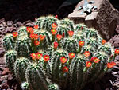
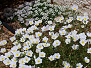

Flower of the Week
This week's featured flower is the white iris. This flower is white. It's an iris. You can trust me to tell the truth about that.
It grows in the ground. It blooms in the spring. It's known as a spring bulb. It grows from a bulb and the bulbs multiply and if you aren't careful you'll have a whole field full of iris after a few years, because these bulbs are busy being prolific down there in the dark.
Don't forget to cut some and take them inside because they smell really nice and they don't make you sneeze all that much.
Flower Highlights
The cactus blooms in spring. Here's how to encourage your cactus to bloom: water it.

A cactus in your garden can brighten up the scene in early spring. The rest of the year feel free to ignore it.
Masses of flowers make good ground cover if you don't kill them.